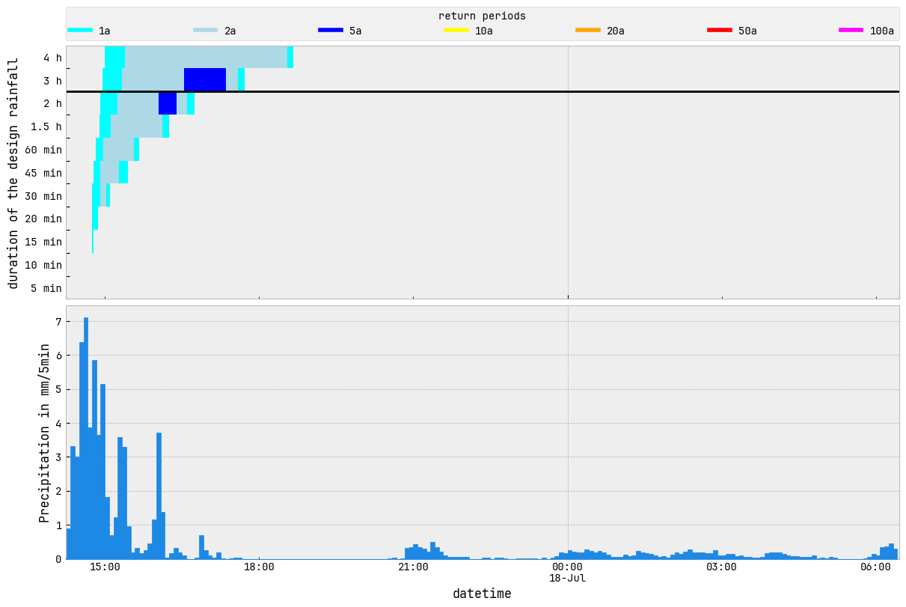

[11]:
from idf_analysis.idf_class import IntensityDurationFrequencyAnalyse
from idf_analysis.definitions import *
import pandas as pd
from os import path
%matplotlib inline
import matplotlib.pyplot as plt
plt.style.use('bmh')
import matplotlib
matplotlib.rcParams.update({
'figure.figsize': (10, 8),
'figure.dpi': 100,
'figure.constrained_layout.use': True,
})
Intensity Duration Frequency Analyse - EXTENDED¶
[12]:
# sub-folder for the results
output_directory = path.join('ehyd_112086_idf_data')
# initialize of the analysis class
idf = IntensityDurationFrequencyAnalyse(series_kind=SERIES.PARTIAL, worksheet=METHOD.KOSTRA, extended_durations=True)
# reading the pandas series of the precipitation (data from ehyd.gv.at - ID=112086)
# You need to install `pyarrow` or `fastparquet` to read and write parquet files.
series = pd.read_parquet('ehyd_112086.parquet').squeeze('columns') # ['precipitation']
# setting the series for the analysis
idf.set_series(series)
# auto-save the calculated parameter so save time for a later use
idf.auto_save_parameters(path.join(output_directory, 'idf_parameters.yaml'))
_balance_parameter_change
[13]:
events = idf.rain_events
"Columns: ", events.columns, "| Number of events: ", events.index.size
[13]:
('Columns: ',
Index(['start', 'end', 'duration', 'rain_sum', 'last_event'], dtype='object'),
'| Number of events: ',
1776)
[14]:
[14]:
('Columns: ',
Index(['start', 'end', 'duration', 'rain_sum', 'last_event'], dtype='object'),
'| Number of events: ',
311)
[15]:
# add the maximum return period to the events and at which duration this period occurs
idf.add_max_return_periods_to_events(events)
"Columns: ", events.columns, "| Number of events: ", events.index.size
[15]:
('Columns: ',
Index(['start', 'end', 'duration', 'rain_sum', 'last_event',
'max_return_period', 'max_return_period_duration'],
dtype='object'),
'| Number of events: ',
311)
[16]:
# reduce number of event by limiting the minimum return period of an event
events = events[events[COL.MAX_PERIOD] > 2].copy()
"Columns: ", events.columns, "| Number of events: ", events.index.size
[16]:
('Columns: ',
Index(['start', 'end', 'duration', 'rain_sum', 'last_event',
'max_return_period', 'max_return_period_duration'],
dtype='object'),
'| Number of events: ',
21)
[17]:
events
[17]:
| start | end | duration | rain_sum | last_event | max_return_period | max_return_period_duration | |
|---|---|---|---|---|---|---|---|
| 104 | 2008-06-23 19:50:00 | 2008-06-23 23:16:00 | 0 days 03:26:00 | 34.8 | 2 days 21:52:00 | 5.443256 | 15 |
| 124 | 2008-07-17 14:14:00 | 2008-07-18 06:27:00 | 0 days 16:13:00 | 74.6 | 0 days 04:09:00 | 6.296477 | 120 |
| 126 | 2008-07-20 17:43:00 | 2008-07-21 03:55:00 | 0 days 10:12:00 | 27.7 | 2 days 02:48:00 | 2.831020 | 5760 |
| 271 | 2009-07-18 08:55:00 | 2009-07-18 13:19:00 | 0 days 04:24:00 | 58.0 | 2 days 01:56:00 | 3.379566 | 240 |
| 279 | 2009-08-21 19:49:00 | 2009-08-21 20:29:00 | 0 days 00:40:00 | 34.2 | 4 days 03:04:00 | 3.975974 | 20 |
| 282 | 2009-08-28 23:41:00 | 2009-08-29 00:42:00 | 0 days 01:01:00 | 49.3 | 1 days 03:44:00 | 19.719853 | 20 |
| 284 | 2009-09-04 00:31:00 | 2009-09-04 18:18:00 | 0 days 17:47:00 | 69.0 | 5 days 11:06:00 | 2.605674 | 1080 |
| 544 | 2011-08-03 19:53:00 | 2011-08-04 07:44:00 | 0 days 11:51:00 | 54.7 | 1 days 23:11:00 | 12.733190 | 20 |
| 662 | 2012-07-14 16:54:00 | 2012-07-15 13:06:00 | 0 days 20:12:00 | 59.8 | 1 days 01:15:00 | 3.719740 | 8640 |
| 772 | 2013-05-05 20:47:00 | 2013-05-07 12:40:00 | 1 days 15:53:00 | 119.5 | 0 days 17:31:00 | 30.573431 | 2880 |
| 819 | 2013-08-27 17:10:00 | 2013-08-27 23:48:00 | 0 days 06:38:00 | 43.3 | 0 days 13:58:00 | 2.617407 | 5 |
| 820 | 2013-08-28 11:42:00 | 2013-08-28 16:21:00 | 0 days 04:39:00 | 28.5 | 0 days 11:54:00 | 3.542479 | 2880 |
| 921 | 2014-05-11 10:21:00 | 2014-05-11 23:17:00 | 0 days 12:56:00 | 55.6 | 0 days 13:17:00 | 2.082202 | 2880 |
| 922 | 2014-05-12 17:22:00 | 2014-05-13 17:26:00 | 1 days 00:04:00 | 20.6 | 0 days 18:05:00 | 2.797981 | 4320 |
| 1111 | 2015-07-08 11:50:00 | 2015-07-09 00:25:00 | 0 days 12:35:00 | 77.8 | 8 days 13:53:00 | 5.981488 | 720 |
| 1236 | 2016-06-05 11:03:00 | 2016-06-05 14:56:00 | 0 days 03:53:00 | 40.4 | 0 days 19:56:00 | 6.794841 | 5 |
| 1269 | 2016-07-21 22:29:00 | 2016-07-21 23:21:00 | 0 days 00:52:00 | 37.2 | 5 days 00:05:00 | 2.448124 | 30 |
| 1273 | 2016-07-25 10:18:00 | 2016-07-25 15:47:00 | 0 days 05:29:00 | 33.8 | 0 days 19:01:00 | 3.399509 | 5760 |
| 1275 | 2016-07-27 15:25:00 | 2016-07-27 20:24:00 | 0 days 04:59:00 | 12.2 | 1 days 01:05:00 | 4.663455 | 8640 |
| 1531 | 2018-06-12 17:00:00 | 2018-06-12 17:31:00 | 0 days 00:31:00 | 21.6 | 3 days 16:11:00 | 3.070451 | 5 |
| 1532 | 2018-06-13 14:58:00 | 2018-06-13 22:27:00 | 0 days 07:29:00 | 63.5 | 0 days 21:27:00 | 11.429391 | 15 |
[18]:
# lets pick one event
event = events.loc[124]
event
[18]:
start 2008-07-17 14:14:00
end 2008-07-18 06:27:00
duration 0 days 16:13:00
rain_sum 74.6
last_event 0 days 04:09:00
max_return_period 6.296477
max_return_period_duration 120
Name: 124, dtype: object
[21]:
fig, caption = idf.event_plot(event)
[22]:
# you can also reduce the displayed duration steps
fig, caption = idf.event_plot(event, durations=idf.duration_steps[:11])
